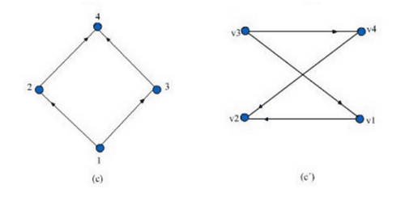
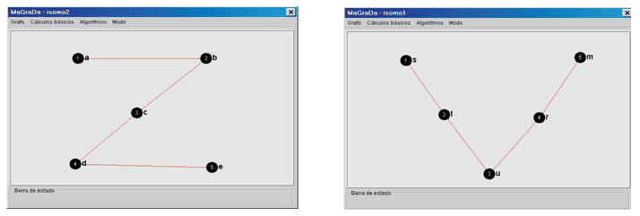

- El vértice 1 está conectado a los vértices 2 y 4.
- El vértice 2 está conectado a los vértices 1 y 5.
- El vértice 3 está conectado al vértice 5.
- El vértice 4 está conectado a los vértices 1 y 5.
- El vértice 5 está conectado a los vértices 2, 3 y 4.
- 1: 2, 4
- 2: 1, 5
- 3: 5
- 4: 1, 5
- 5: 2, 3, 4
- El vértice 1 tiene una arista dirigida hacia el vértice 6.
- El vértice 2 tiene una arista dirigida hacia el vértice 1 y 4.
- El vértice 3 tiene una arista dirigida hacia el vértice 2.
- El vértice 4 tiene una arista dirigida hacia el vértice 5 y un lazo (una arista que regresa al mismo vértice).
- El vértice 5 no tiene aristas salientes.
- El vértice 6 tiene una arista dirigida hacia el vértice 4.
- 1: 6
- 2: 1, 4
- 3: 2
- 4: 5, 4
- 5:
- 6: 4
- Partimos en el nodo "a" y lo marcamos como visitado.
- Lista de visitados: a
- Desde aquí, tenemos dos opciones de vecinos a visitar: b y d. En DFS, seguimos el camino en profundidad, así que elijamos el primer vecino en orden alfabético, que en este caso es "b".
- Ahora estamos en "b" y lo marcamos como visitado.
- Lista de visitados: a → b
- En "b", tenemos tres vecinos: a, c, y d.
- Como "a" ya ha sido visitado, lo omitimos y nos movemos al siguiente vecino no visitado, que es "c".
- Llegamos a "c" y lo marcamos como visitado.
- Lista de visitados: a → b → c
- En "c", encontramos dos vecinos: b y d.
- Como "b" ya ha sido visitado, omitimos esa opción y nos movemos al siguiente vecino no visitado, que es "d".
- Llegamos a "d" y lo marcamos como visitado.
- Lista de visitados: a → b → c → d
- En "d", tenemos tres vecinos: a, b, y c.
- Sin embargo, todos estos vecinos ya han sido visitados. Por lo tanto, no hay más nodos que explorar desde "d".
- Dado que ya no hay vecinos no visitados desde "d", retrocedemos al nodo anterior, que es "c".
- En "c", tampoco quedan vecinos no visitados, por lo que retrocedemos nuevamente a "b".
- En "b", tampoco hay vecinos no visitados, así que retrocedemos finalmente a "a".
- En "a", todos los vecinos han sido explorados, lo que indica que el recorrido DFS está completo.
- Ambos grafos tienen 4 vértices
- Ambos grafos tienen 4 aristas
- Vértice 1: grado 2
- Vértice 2: grado 2
- Vértice 3: grado 2
- Vértice 4: grado 2
- Vértice v1: grado 2
- Vértice v2: grado 2
- Vértice v3: grado 2
- Vértice v4: grado 2
- Vértice 1 está conectado con los vértices 2 y 3.
- Vértice 2 está conectado con los vértices 1 y 4.
- Vértice 3 está conectado con los vértices 1 y 4.
- Vértice 4 está conectado con los vértices 2 y 3.
- Vértice 1 en el primer grafo se corresponde con v1 en el segundo grafo.
- Vértice 2 en el primer grafo se corresponde con v2 en el segundo grafo.
- Vértice 3 en el primer grafo se corresponde con v3 en el segundo grafo.
- Vértice 4 en el primer grafo se corresponde con v4 en el segundo grafo.
- v1 está conectado con v2 y v3, que corresponde a las conexiones de 1 en el primer grafo.
- v2 está conectado con v1 y v4, que corresponde a las conexiones de 2 en el primer grafo.
- v3 está conectado con v1 y v4, que corresponde a las conexiones de 3 en el primer grafo.
- v4 está conectado con v2 y v3, que corresponde a las conexiones de 4 en el primer grafo.
- Ambos grafos tienen 5 vértices.
- Ambos grafos tienen 4 aristas.
- Vértice a: grado 1
- Vértice b: grado 2
- Vértice c: grado 2
- Vértice d: grado 2
- Vértice e: grado 1
- Vértice s: grado 1
- Vértice t: grado 2
- Vértice u: grado 2
- Vértice r: grado 2
- Vértice m: grado 1
- Vértice a está conectado con el vértice b.
- Vértice b está conectado con los vértices a y c.
- Vértice c está conectado con los vértices b y d.
- Vértice d está conectado con el vértice c y e.
- Vértice e está conectado con el vértice d.
- Vértice a en el primer grafo se corresponde con s en el segundo grafo.
- Vértice b en el primer grafo se corresponde con t en el segundo grafo.
- Vértice c en el primer grafo se corresponde con u en el segundo grafo.
- Vértice d en el primer grafo se corresponde con r en el segundo grafo.
- Vértice e en el primer grafo se corresponde con m en el segundo grafo.
- s está conectado con t, que corresponde a la conexión de a en el primer grafo.
- t está conectado con s y u, que corresponde a las conexiones de b en el primer grafo.
- u está conectado con t y r, que corresponde a las conexiones de c en el primer grafo.
- r está conectado con u y m, que corresponde a las conexiones de d en el primer grafo.
- m está conectado con r, que corresponde a la conexión de e en el primer grafo.
━━━━━━━━━━━━━━━━━━━ ◦ ❖ ◦ ━━━━━━━━━━━━━━━━━
4.1 Lista de Adyacencia
Vamos a ver el ejemplo de cómo obtener la matriz y lista de adyacencia del siguiente grafo no dirigido:

SOLUCIÓN.
Paso 1: Debemos identificar los vértices y las aristas que los unen dentro del grafo.
En este caso, observamos que:
SIGUIENTE
Paso 2: El siguiente paso es crear la lista de adyacencia.
Para ello, simplemente mediante una lista ordenaremos a cada vértice con sus respectivos nodos vecinos:
Entonces, la Lista de Adyacencia es:
SIGUIENTE
Paso 3: Ahora procedemos a crear la matriz de adyacencia de nuestro grafo.
Primero, tenemos que identificar la cantidad de nodos que hay, ya que si el grafo tiene n vértices, la matriz de adyacencia será de tamaño n×n.
En este caso usaremos una matriz 5×5 (ya que hay 5 vértices) y la inicializamos con valores en cero.

Finalmente, llenaremos la matriz de forma que cada posición (i, j) tendrá un 1 si hay una conexión entre el vértice i(filas) y el vértice j(columnas), y un 0 si no la hay.

Así finalizamos el proceso para obtener la matriz y lista de adyacencia del grafo.
En este caso, observamos que:
SIGUIENTE
Para ello, simplemente mediante una lista ordenaremos a cada vértice con sus respectivos nodos vecinos:
Entonces, la Lista de Adyacencia es:
SIGUIENTE
Primero, tenemos que identificar la cantidad de nodos que hay, ya que si el grafo tiene n vértices, la matriz de adyacencia será de tamaño n×n.
En este caso usaremos una matriz 5×5 (ya que hay 5 vértices) y la inicializamos con valores en cero.
Finalmente, llenaremos la matriz de forma que cada posición (i, j) tendrá un 1 si hay una conexión entre el vértice i(filas) y el vértice j(columnas), y un 0 si no la hay.
Así finalizamos el proceso para obtener la matriz y lista de adyacencia del grafo.
━━━━━━━━━━━━━━━━━━━ ◦ ❖ ◦ ━━━━━━━━━━━━━━━━━
4.2 Matrizz y Lista de Adyacencia
Ahora, haremos un ejemplo sobre cómo obtener la matriz y lista de adyacencia de un grafo dirigido.
 SOLUCIÓN.
SOLUCIÓN.
Paso 1: El proceso será muy similar al anterior.
Primero tenemos que observar cómo está constituido el grafo: en este caso tenemos los vértices numerados del 1 al 6 y las aristas están dirigidas entre ellos. Observemos las conexiones:
SIGUIENTE
Paso 2: En un grafo dirigido, la lista de adyacencia refleja las conexiones en una dirección específica.
Esto significa que cada arista tiene un vértice de origen y un vértice de destino, y solo el vértice de origen incluirá al vértice de destino en su lista de adyacencia. Por lo tanto, en este caso la lista de adyacencia que obtenemos es:
SIGUIENTE
Paso 3:
Ahora, para elaborar la matriz de adyacencia, primero identificamos el número de vértices que este contiene, ya que la matriz de adyacencia será de tamaño nxn (siendo n la cantidad de vértices). Inicialmente, le damos valores de cero, en este caso, la matriz será de 6x6.

SIGUIENTE
Paso 4:
Posteriormente, comenzamos con el llenado de la matriz. Para ello, por cada arista dirigida del grafo, coloca un 1 en la posición (i,j) de la matriz si hay una arista dirigida desde el vértice i al vértice j. Si no existe una arista, deja un 0 en esa posición.
Si algún vértice tiene un lazo (una arista que apunta a sí mismo), coloca un 1 en la posición diagonal correspondiente, es decir, en (i,i).
De esta forma obtenemos la siguiente matriz:

Así finalizamos el proceso para obtener la matriz y lista de adyacencia del grafo dirigido.
Primero tenemos que observar cómo está constituido el grafo: en este caso tenemos los vértices numerados del 1 al 6 y las aristas están dirigidas entre ellos. Observemos las conexiones:
SIGUIENTE
Esto significa que cada arista tiene un vértice de origen y un vértice de destino, y solo el vértice de origen incluirá al vértice de destino en su lista de adyacencia. Por lo tanto, en este caso la lista de adyacencia que obtenemos es:
SIGUIENTE
Ahora, para elaborar la matriz de adyacencia, primero identificamos el número de vértices que este contiene, ya que la matriz de adyacencia será de tamaño nxn (siendo n la cantidad de vértices). Inicialmente, le damos valores de cero, en este caso, la matriz será de 6x6.
SIGUIENTE
Posteriormente, comenzamos con el llenado de la matriz. Para ello, por cada arista dirigida del grafo, coloca un 1 en la posición (i,j) de la matriz si hay una arista dirigida desde el vértice i al vértice j. Si no existe una arista, deja un 0 en esa posición.
Si algún vértice tiene un lazo (una arista que apunta a sí mismo), coloca un 1 en la posición diagonal correspondiente, es decir, en (i,i).
De esta forma obtenemos la siguiente matriz:
Así finalizamos el proceso para obtener la matriz y lista de adyacencia del grafo dirigido.
━━━━━━━━━━━━━━━━━━━ ◦ ❖ ◦ ━━━━━━━━━━━━━━━━━
4.3 Recorrido DFS
A continuación veremos un ejemplo de cómo se realiza la búsqueda a profundidad (DFS) con el siguiente grafo:

SOLUCIÓN.
Paso 1: Iniciamos el recorrido en el nodo "a".
SIGUIENTE
Paso 2: Moverse al nodo "b".
SIGUIENTE
Paso 3: Moverse al nodo "c".
SIGUIENTE
Paso 4: Moverse al nodo "d".
SIGUIENTE
Paso 5: Retroceso.
SIGUIENTE
Paso 6: Finalmente
Podemos concluir que el recorrido DFS encontró y visitó todos los nodos del grafo en el orden a → b → c → d , asegurándose de que cada rama ó “camino” se agotara completamente antes de pasar a otra.
SIGUIENTE
SIGUIENTE
SIGUIENTE
SIGUIENTE
SIGUIENTE
Podemos concluir que el recorrido DFS encontró y visitó todos los nodos del grafo en el orden a → b → c → d , asegurándose de que cada rama ó “camino” se agotara completamente antes de pasar a otra.
━━━━━━━━━━━━━━━━━━━ ◦ ❖ ◦ ━━━━━━━━━━━━━━━━━
4.4 Isomorfismo de grafos
Para verificar si los dos grafos en la imagen son isomorfos, seguimos estos pasos:

SOLUCIÓN.
Paso 1: Contar el número de vértices y aristas
Observamos ambos grafos y verificamos que tengan el mismo número de vértices y aristas.
Esto es un primer indicio de que podrían ser isomorfos, pero aun necesitamos revisar que también tienen la misma estructura.
SIGUIENTE
Paso 2: Revisar los grados de los vértices
Comprobamos que los grados (número de aristas que inciden en cada vértice) de los vértices correspondientes sean iguales.
En el grafo de la izquierda, el grado de cada vértice es:
En el grafo derecha, el grado de cada vértice es:
SIGUIENTE
Paso 3: Comprobar la adyacencia entre los vértices
Para que dos grafos sean isomorfos, debe existir una correspondencia entre los vértices de ambos grafos que conserve la adyacencia(conexiones).
Primero observemos las conexiones (adyacencias) en el primer grafo( el que está en la izquierda):
Ahora hay que buscar una correspondencia entre los vértices del primer grafo y el segundo que conserve la adyacencia:
Ahora se comprueba la adyacencia en el segundo grafo(el de la derecha) para esta correspondencia:
En conclusión, es un isomorfismo de grafos
Observamos ambos grafos y verificamos que tengan el mismo número de vértices y aristas.
Esto es un primer indicio de que podrían ser isomorfos, pero aun necesitamos revisar que también tienen la misma estructura.
SIGUIENTE
Comprobamos que los grados (número de aristas que inciden en cada vértice) de los vértices correspondientes sean iguales.
En el grafo de la izquierda, el grado de cada vértice es:
En el grafo derecha, el grado de cada vértice es:
SIGUIENTE
Para que dos grafos sean isomorfos, debe existir una correspondencia entre los vértices de ambos grafos que conserve la adyacencia(conexiones).
Primero observemos las conexiones (adyacencias) en el primer grafo( el que está en la izquierda):
Ahora hay que buscar una correspondencia entre los vértices del primer grafo y el segundo que conserve la adyacencia:
Ahora se comprueba la adyacencia en el segundo grafo(el de la derecha) para esta correspondencia:
En conclusión, es un isomorfismo de grafos
━━━━━━━━━━━━━━━━━━━ ◦ ❖ ◦ ━━━━━━━━━━━━━━━━━
4.5 Isomorfismos II

Para verificar si los dos grafos en la imagen son isomorfos, seguimos estos pasos:
SOLUCIÓN.
Paso 1: Contar el número de vértices y aristas.
Observamos ambos grafos y verificamos que tengan el mismo número de vértices y aristas.
Esto es un primer indicio de que podrían ser isomorfos, pero aún necesitamos revisar que también tienen la misma estructura.
SIGUIENTE
Paso 2: Revisar los grados de los vértices
Comprobamos que los grados (número de aristas que inciden en cada vértice) de los vértices correspondientes sean iguales.
En el grafo de la izquierda, el grado de cada vértice es:
En el grafo derecha, el grado de cada vértice es:
SIGUIENTE
Paso 3: Comprobar la adyacencia entre los vértices
Para que dos grafos sean isomorfos, debe existir una correspondencia entre los vértices de ambos grafos que conserve la adyacencia (conexiones).
Primero observemos las conexiones (adyacencias) en el primer grafo (el que está en la izquierda):
Ahora hay que buscar una correspondencia entre los vértices del primer grafo y el segundo que conserve la adyacencia:
Ahora se comprueba la adyacencia en el segundo grafo (el de la derecha) para esta correspondencia:
En conclusión, es un isomorfismo de grafos.
Observamos ambos grafos y verificamos que tengan el mismo número de vértices y aristas.
Esto es un primer indicio de que podrían ser isomorfos, pero aún necesitamos revisar que también tienen la misma estructura.
SIGUIENTE
Comprobamos que los grados (número de aristas que inciden en cada vértice) de los vértices correspondientes sean iguales.
En el grafo de la izquierda, el grado de cada vértice es:
En el grafo derecha, el grado de cada vértice es:
SIGUIENTE
Para que dos grafos sean isomorfos, debe existir una correspondencia entre los vértices de ambos grafos que conserve la adyacencia (conexiones).
Primero observemos las conexiones (adyacencias) en el primer grafo (el que está en la izquierda):
Ahora hay que buscar una correspondencia entre los vértices del primer grafo y el segundo que conserve la adyacencia:
Ahora se comprueba la adyacencia en el segundo grafo (el de la derecha) para esta correspondencia:
En conclusión, es un isomorfismo de grafos.
━━━━━━━━━━━━━━━━━━━ ◦ ❖ ◦ ━━━━━━━━━━━━━━━━━